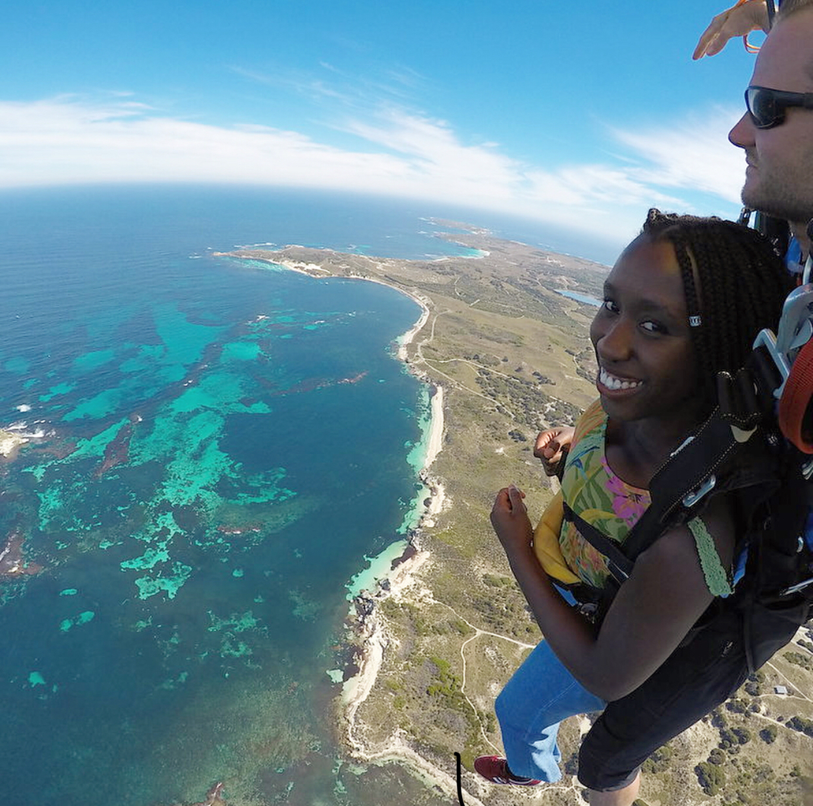
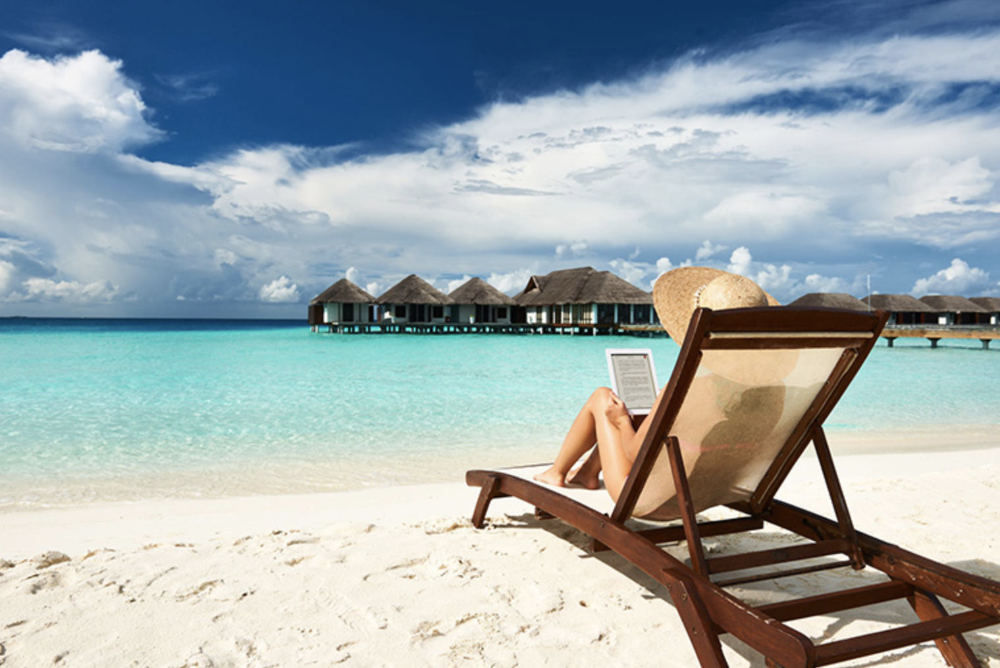
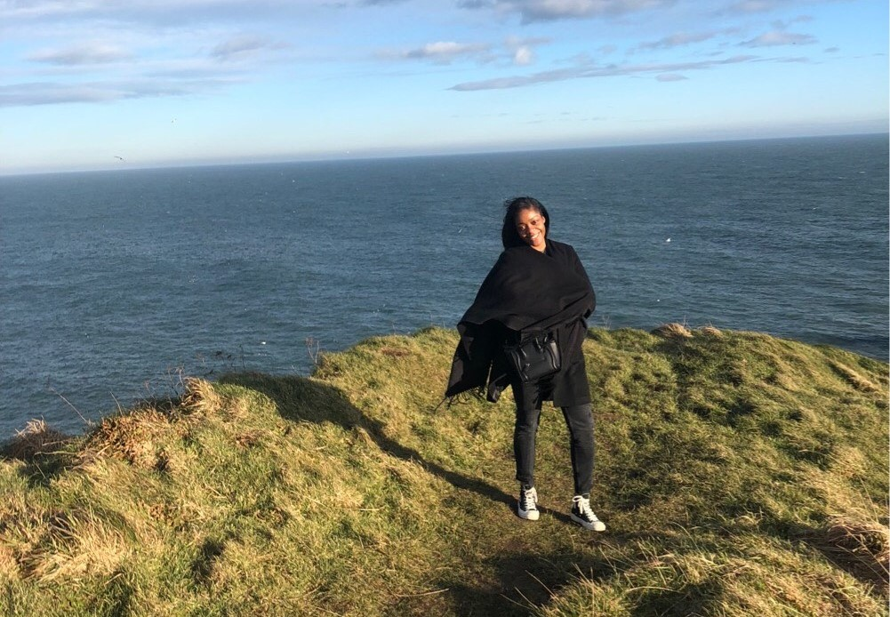

Just as the human body has a “stress response” to certain situations, it also has “relaxation response”, and taking advantage of this can help you deal with stressful situations. Here are some ways to keep your stress to a minimum and some activities to help you do that, including some of our personal favorites!